<!DOCTYPE html>
<html lang="en">
<head>
    <meta charset="UTF-8">
    <meta name="viewport" content="width=device-width, initial-scale=1.0">
    <title>Document</title>
    <link href="Cric.css" rel="stylesheet"/>
    <link href="test1.html" rel="stylesheet"/>
</head>
</html>
<html>
    <body>
        <main>
            <button id="id-theme">Dark Theme</button>
            <h1><em> Традиции Тайваня. </em> </h1>
            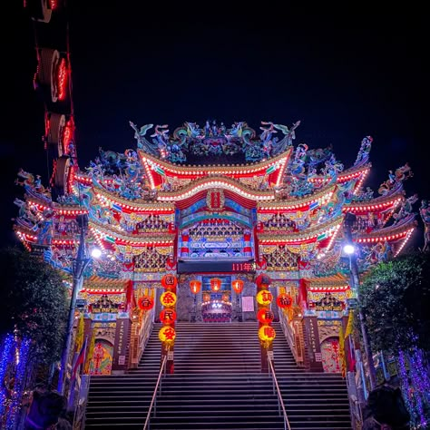
            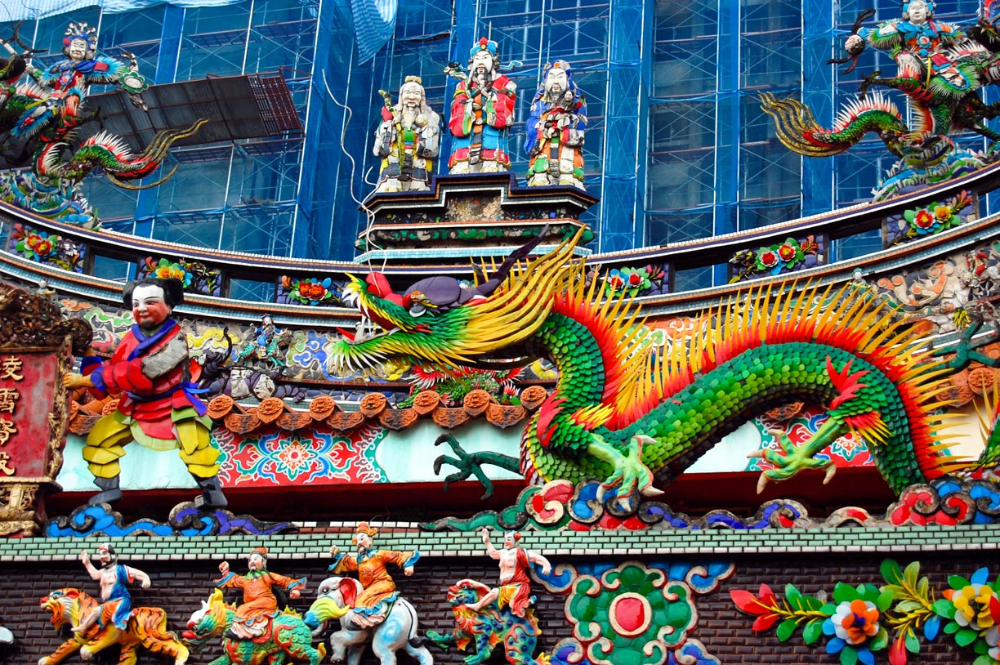
            
            <p>В Тайване много интересных <a href="https://translated.turbopages.org/proxy_u/en-ru.ru.b644b902-6a549ed9-b9d301ff-74722d776562/https/en.wikipedia.org/wiki/Culture_of_Taiwan" target="_blank">традиций. </a>Традиции Тайваня берут начало из нескольких ключевых источников, которые на протяжении истории острова переплетались и формировали уникальную культурную смесь. </p>
            
            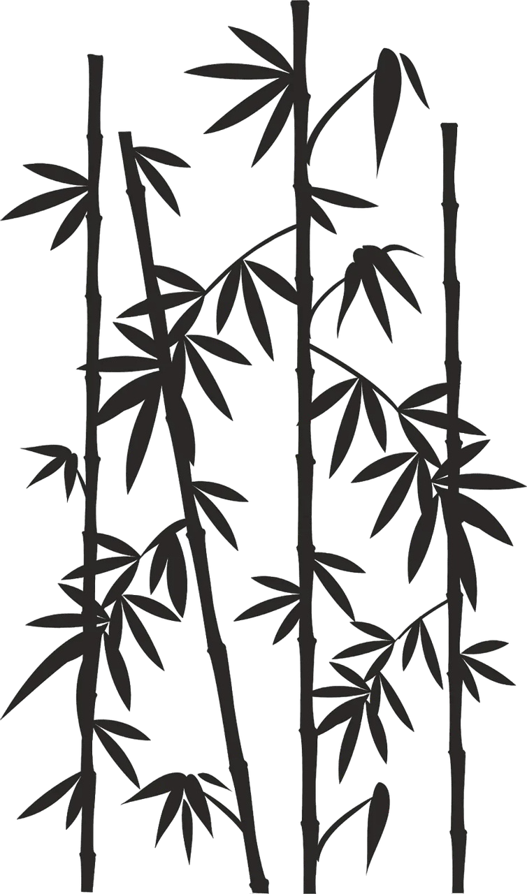
            <p>Отправиться в <a href="https://youtravel.me/tours/53863/%D1%82%D0%B0%D0%B9%D0%BD%D1%8B_%D0%B8_%D1%87%D1%83%D0%B4%D0%B5%D1%81%D0%B0_%D1%82%D0%B0%D0%B9%D0%B2%D0%B0%D0%BD%D1%8F_-_%D1%83%D0%BD%D0%B8%D0%BA%D0%B0%D0%BB%D1%8C%D0%BD%D1%8B%D0%B9_%D1%82%D1%83%D1%80_%D0%BD%D0%B0_%D0%BE%D1%81%D1%82%D1%80%D0%BE%D0%B2">тур</a> по Тайваню очень весело и увлекательно, но рекомендуем ознакомиться с <a href="https://skyeng.ru/articles-kitajskij/kultura-i-tradicii-cn/kak-vesti-sebya-v-gostyakh-u-kitaytsev-chto-govorit-i-chego-izbegat/?ysclid=mrlr4uh7sr34778525">обычаями и нормами приличия.</a></p>
            <h2>Советуем посетить:</h2>
                <ol>
                    <li>Тайбэй 101.</li>
                    
                    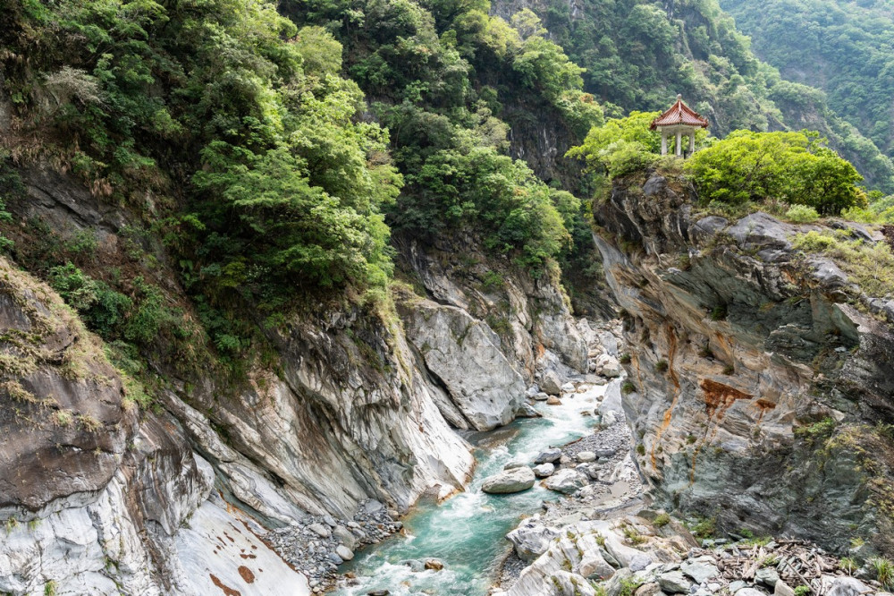
                    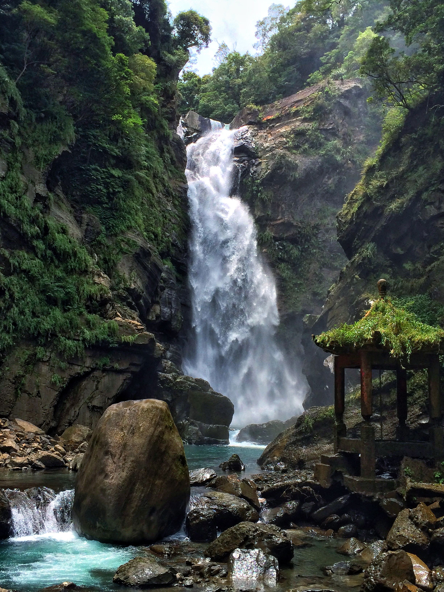
                    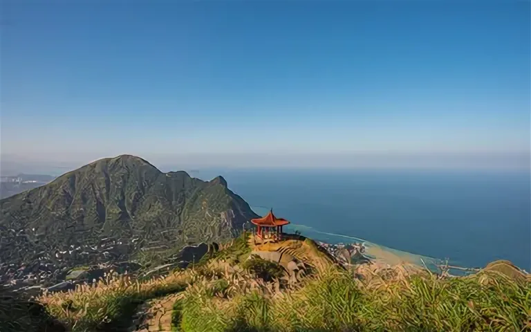
                    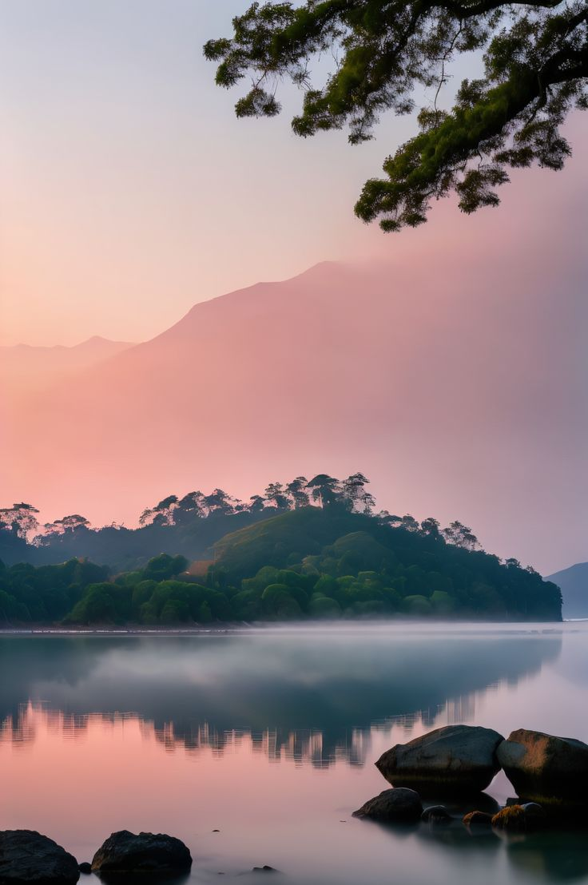
                    <li>Национальный дворцовый музей.</li>
                    
                    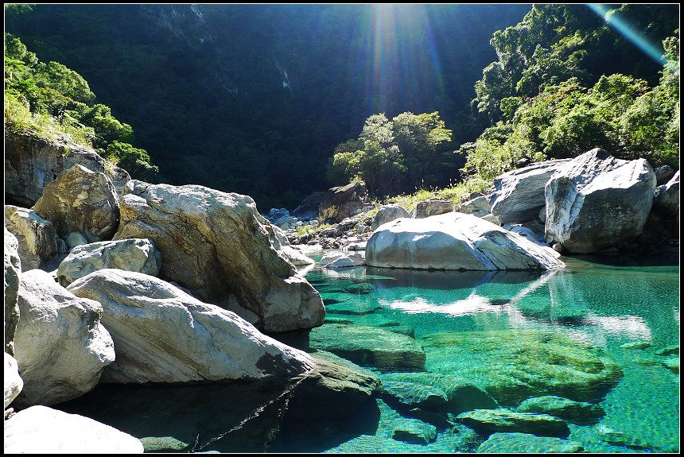
                    <li>Мемориал Чан Кайши.</li>
                    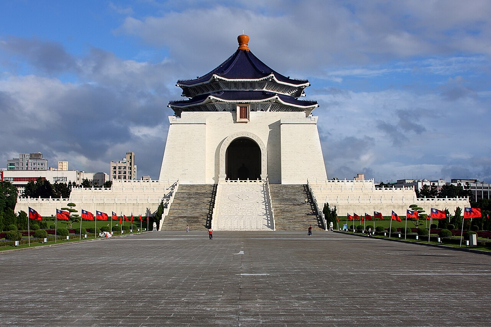
                    <li>Ночные рынки. Например, Шилинь.</li>
                    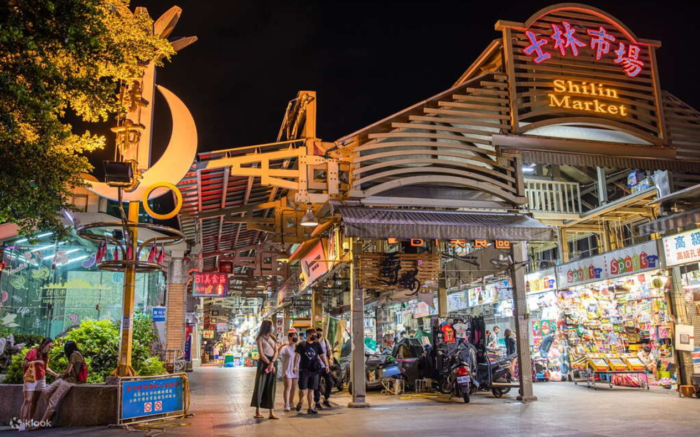
                    <li>Храм Луншань.</li>
                    
                    <li>Национальный парк Тароко.</li>
                    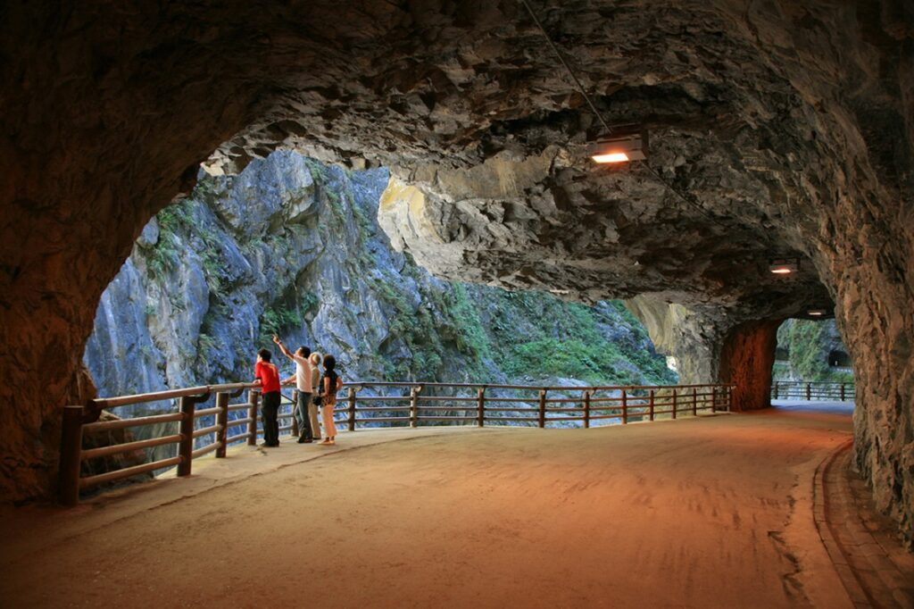
                </ol>
        </main>
            <script src="scrip.js"></script>
    </body>
</html> 